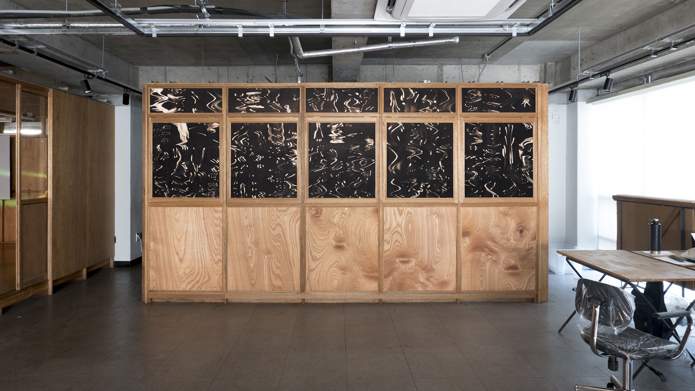

Handmade Night

인쇄물 설치, 가변설치, 2021.
⟨Handmade Night⟩는 구속에 의해 창출되는 신체의 낯선 아름다움에서 시작된다. 주어진 규칙을 따라 스캐너 위에서 손과 반지를 움직여 만들어낸 새로운 장면이다. 파주타이포그라피학교 더배곳 내 창문에 설치된 이 작품은 가까이 보면 손과 반지가 왜곡된 기이한 장면이지만, 멀리서 보면 장노출로 촬영된 듯한 우아한 밤 풍경이 펼쳐진다.